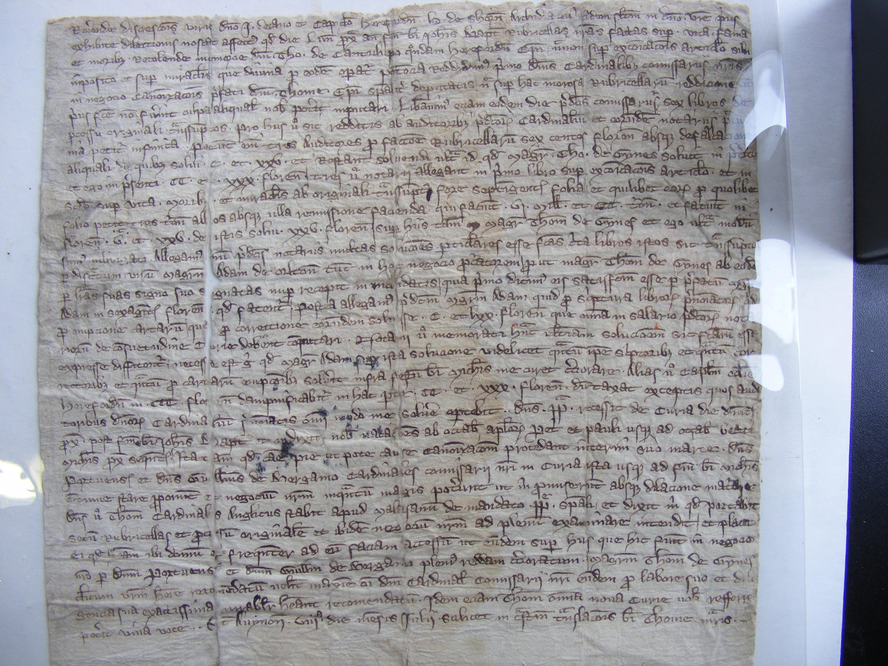

Blog
My 'Pilgrimage' to Hereford Cathedral Archive

Straight after Easter I made my own pilgrimage to Hereford – not so much to pray at the tomb, as to explore the Cathedral archives for all things Cantilupe related. As an ex-pupil of Hereford cathedral School, it felt very much like coming home!
I was met by archivist Rosalind Caird who was hugely helpful, not only in explaining the workings of the library, but also in suggesting where I might look for information.
Well, the trip was a success. I had expected to find something about Thomas de Cantilupe and his canonisation process, as it had all begun right there in the 1280s. However, I found much, much more than I had even hoped!
Perhaps one of the most exciting things I came across was MS 1443, a letter dating from 1309 written on paper (if you turned it over, the threads of were still visible where they had not been sufficiently mulched). Apart for being a novelty for me as I was looking at the oldest paper document I have yet encountered, the content of the letter was also something of a revelation.
The letter begins with Henry de Shorne’s apology for the delay in St Thomas de Cantilupe’s canonisation proceedings, but then goes on to assure the recipient John, dean of Hereford, that the six volumes of evidence copied from the original interview proceedings are to be sent directly so that work can resume on the case: six volumes!
Having worked with the manuscripts Vat. Lat. 4015 and 4016 in the flesh last Autumn, I knew that these were fair copies of the proceedings, despite the marginal notes and adjustments which had been made to the texts. The missing link was what these ‘neat versions’ had been based upon, and now I had uncovered one more link in the chain of evidence. There is still a question of what form the records of the ‘original processes’ took: they may have been on loose leaves of parchment or wax tablets. What we might consider though is that they were taken from these temporary records, placed in these six volumes, then subsequently edited to make the surviving volumes in the Vatican Library.
Other pieces of the puzzle which I came across in the archives were the letters I had read about in Bartlett’s book, appointing the bishops who were to run the enquiry, one of which even carried the now familiar notary’s mark found at the back of Vat. Lat. 4015 at the bottom. I also consulted the papal bull of Clement V which was disseminated in 1320, officially announcing the successful canonisation of the new St Thomas de Cantilupe.
I also discovered evidence for just how popular Thomas had been outside Hereford: there were a number of documents detailing the forms of indulgence offered by people seeking the saint’s aid from as far away as Norfolk where forty-five pounds, four shillings and two pence and a halfpenny had been donated to the saint. There were also forms of indulgence offered by the bishops of Worcester (MS 1420), Salisbury (MS 1429) and London (MS 1423), for penitents if they prayed for the soul Thomas de Cantilupe, even before he was officially made a saint.
All in all it was a fantastic trip, and I have found a great deal of material to help with the final notes in my edition, and the paper I will be giving on 30th January 2015 to Hereford’s branch of the Historical Association.
Şħȧřḗ ǿƞ Ŧẇīŧŧḗř Şħȧřḗ ǿƞ Ƒȧƈḗƀǿǿķ